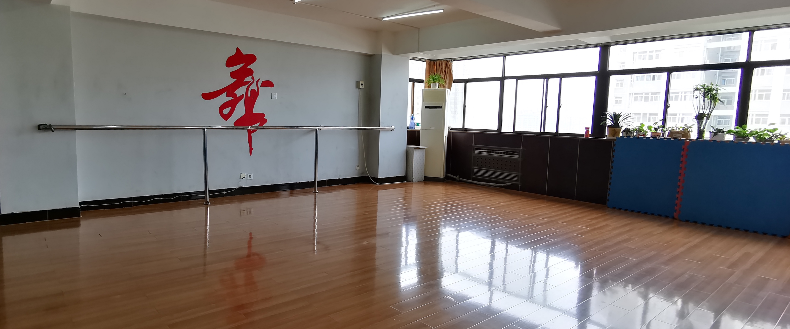
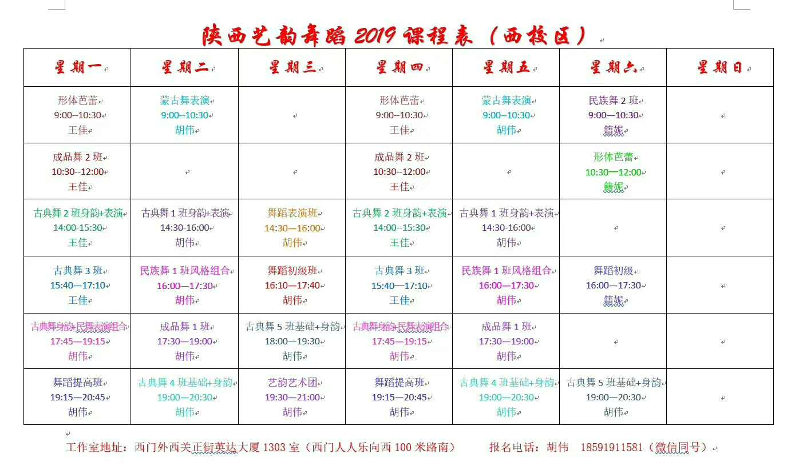
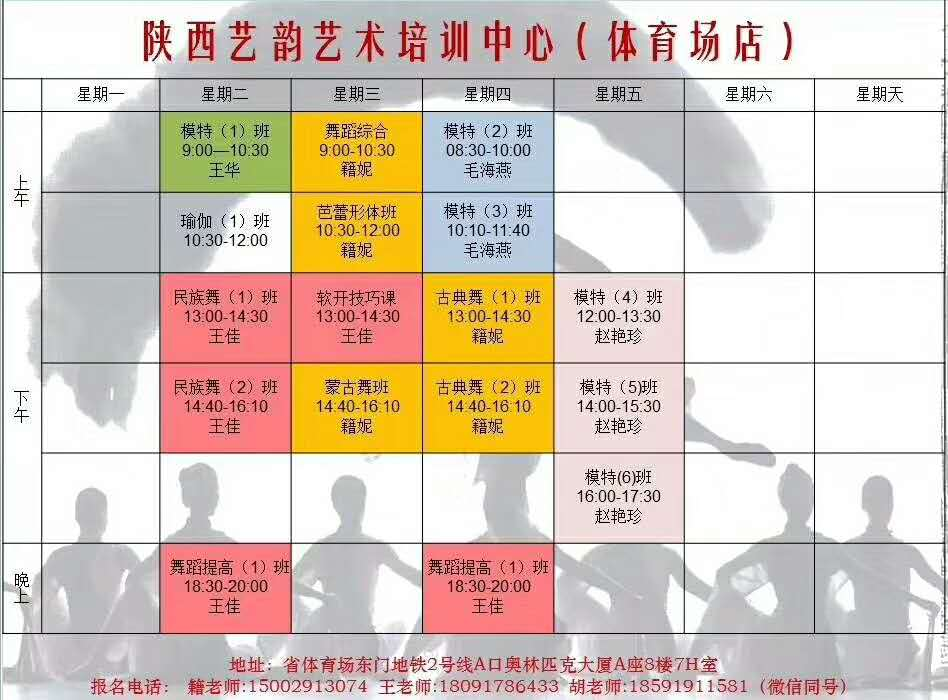
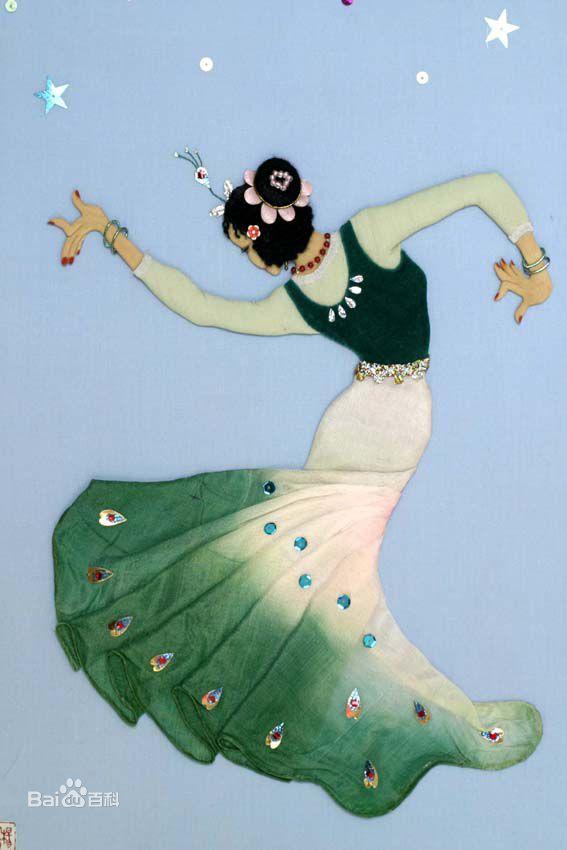
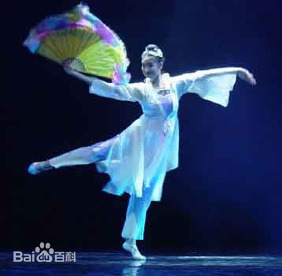

舞台再大，你不加入，永远都是观众，衣服再好，穿不出效果也让人苦恼。
做气质女人，选艺韵舞蹈。
师资力量雄厚，课程类型多样。给您生活画龙点睛，重要的是与同龄人的外表拉开差距，逆龄生长。
在这里，我们不论年龄，只要热爱舞蹈，就快了加入我们。
刚好您需要，也刚好我专业。
陕西艺韵舞蹈，欢迎更多的舞蹈爱好者加入我们艺韵大家庭。

关于我们
陕西艺韵舞蹈，成立于2015年，工作室以古典舞、民族民间舞、形体芭蕾等成人舞蹈教学为主。 工作室秉承专业教学为宗旨，三位任课教师均是艺术类院校本科舞蹈专业毕业，经过多年文工团工作后，积累了丰富的演出及教学经验。 在教学能力及舞蹈编排等方面都有独特的方式方法。并得到广大舞蹈爱好者的一致肯定。
课程安排


舞种介绍

民族舞泛指产生并流传于民间、受民俗文化制约、即兴表演但风格相对稳定、以自娱为主要功能的舞蹈形式。不同地区、国家、民族的民间舞蹈，由于受生存环境、风俗习惯、生活方式、民族性格、文化传统、宗教信仰等因素影响，以及受表演者的年龄性别等生理条件所限，在表演技巧和风格上有着十分明显的差异。民间舞不乏朴实无华、形式多样、内容丰富、形象生动等特点，历来都是各国古典舞、民间舞、宫廷舞和专业舞蹈创作不可或缺的素材来源。
民族民间舞是一个多层次的概念和可伸缩的界面，它可以包容各种程度的加工。民族舞是一个民族的标志物，（如孔雀舞等，就属于民族舞）是一个民族乃至一个国家的灵魂。它需要艺术家进行高度的再创造，从民间来最后又回到民间去，练习民族舞好处有如下：1、
有较强趣味性 2、 培养舞者气质 3、 让人心情愉悦 4、有益身心。

古典舞是指在民间传统舞蹈的基础上，经过历代专业工作者提炼、整理、加工、创造，并经过较长时期艺术实践的检验，流传下来的被认为是具有一定典范意义的和古典风格特点的舞蹈。
中国的古典舞创立于五十年代，曾一度被一些人称作“戏曲舞蹈”。它本身就是介于戏曲与舞蹈之间的混合物，也就是说还未完全从戏曲中蜕变出来，称它为戏曲。

中国内蒙古自治区以及吉林、黑龙江等省蒙古族聚居地区的民间舞蹈。蒙古民族的舞蹈文化与他们的狩猎、游牧生活有密切联系。蒙古民族祖先的原始舞蹈形态，在新石器时代、青铜时代凿刻的阴山崖画、乌兰察布崖画中，有着生动真实的表现。在古代，蒙古族还有很多模仿凶猛动物的舞蹈，如“白海青”（白鹰）舞、熊舞、狮子舞、鹿舞等。这些舞蹈作为独立的形式，大都失传，但在萨满舞中仍有反映。